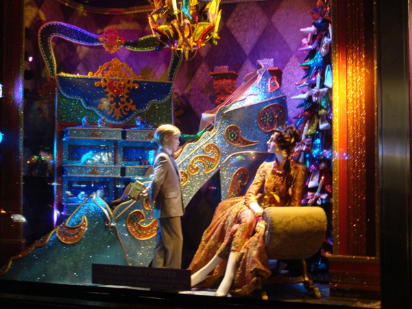
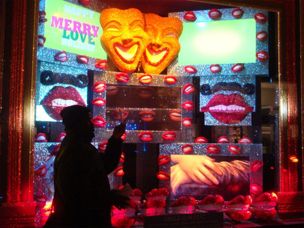
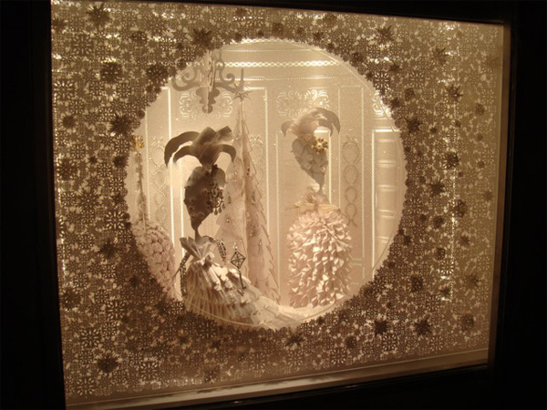
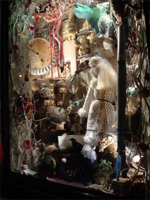
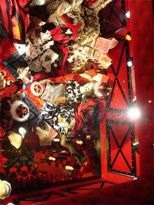
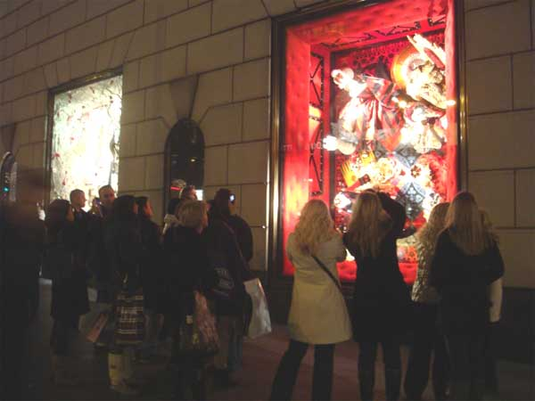

-
Notes from Christmas Windows
by Lauren DiGiulio December 26, 2009
Bloomingdales Shoe Department
Nowhere does the spectacle of holiday consumption offer a more visually compelling performance than in the window displays of Midtown’s luxury department stores. Each year, these flagships deck their windows with ornate displays that feature promoted items set against props and backdrops, creating miniature installations that perform as public spectacles designed to delight, amuse, and entice.
A close viewing of such displays often reveals carefully composed presentations that celebrate a heightened level of craft. Frequently taking color as a point of departure, the best displays explore juxtapositions of shape, texture, and material presented within a dynamically staged narrative composition celebrating featured objects (i.e. clothing, jewelry, or home goods). By distilling narrative elements and focusing on formal qualities, the displays obtain a level of abstraction that keeps the message light while encouraging the viewer’s imagination to roam freely within the presented fantasia. We feel as if we are peering into ornate jewel boxes, magical realms, or simply worlds of obscene luxury which the average spectator can glimpse but never quite grasp. While there is no art in these displays, there is a logic – a sort of kitschy rhythm – to these shock and awe spectacles of contemporary consumption.
Bloomingdales, Smile-O-Matic
Glitter emerges as the central theme at Bloomingdale’s, whose windows sparkle in multiple colors. One features two large, heavily bedazzled bears reading to a baby, while smaller bears dance around a rotating, multi-tiered display laden with fabricated, oversized gummy bears. A caption on the glass titles the piece and provides whimsical food for thought: “Colorific/Holiday cheer changes a world of black and white/To one filled with all things brilliant and bright”. Indeed. The viewer wishes she had brought her sunglasses.
Another window proves more interactive. Titled “Smile-O-Matic”, this display features smiling lips that float around a giant central mirror. By stepping onto a spot marked on the sidewalk, the viewer can insert her image directly into the installation. From this position, the spectator’s image is reflected along the bottom half of the mirror while simultaneously being recorded and displayed along its upper half.. By inviting the viewer’s likeness into the center of the installation, the display rehearses the evolution of commodity into image.
Tiffany's
Installations at other stores take a more understated approach. A few blocks down Fifth Avenue, the windows at Tiffany’s glow with intricately crafted white paper cutouts. The tiny displays evoke the whimsy of animated music boxes and the delicacy of Victorian paper doilies. A delicate proscenium frames a seventeenth-century court salon scene that features turning figurines draped in various diamond accessories. The presence of a glittering key that dangles from the hand of a downstage figure foregrounds the sense of privilege the viewer feels upon gazing into this private scene.
Meanwhile, outrageous displays reign at Henri Bendel, the luxury purveyor of makeup and women’s accessories. In the main window, various modes of consumption are depicted with erotic undertones. Female mannequins don sparkling body suits and harlequin masks to perform a bacchanal scene that celebrates an orgiastic vision of consumption. One mannequin answers the door to find another laden with Henri Bendel gift boxes, while a third sits hunched over a laptop beneath a table dripping with fruit. Another swings from the chandelier, pouring champagne into a tower of glasses that overflows with froth. By thematically linking the consumption of luxury material with food and sex, the display solicits our physical instincts, recasting the act of shopping as naturally pleasurable behavior.
Bergdorf Goodman
No holiday spectacle-viewing would be complete without a trip to Bergdorf Goodman, the uncontested champion of such holiday displays. Taking Wes Anderson’s recent Fantastic Mr. Fox as inspiration, the men’s installations feature original sets and puppets from the film, adorned with various ensembles that complement its quirk-prep aesthetic. The character Mole is presented in his underground dispatch among bowties that cascade down the side of his desk. Boggis, Bunce, and Bean, the film’s antagonistic human characters, stand under a carved-out section of hillside while pointed Oxford shoes traipse overhead. Here, the miniature set is juxtaposed against human-sized accessories, encouraging a step closer to contemplate the exquisite craft of shoe and set alike.
Across the street, the women’s department riffs on various recognizable scenes from Alice in Wonderland to create a larger series titled “Compendium of Curiosities.” Here again we find a celebratory emphasis on the heightened craftsmanship of designer clothing and decorative art. The Queen of Hearts is evoked in a massive display that depicts three mannequins dressed in Alexander McQueen regalia, playing cards in and amongst an opulently propped environment that features over-sized chess pieces, backgammon boards, and card towers. Here, the entire set is tilted vertically, flattening the scene to create an intricate surface pattern that allows us to survey its layout as we would a game board.
A looking-glass theme marks one of the more dazzling installations. A cut-glass proscenium frames the window as reference to an 18th century Venetian mirror. Versions of such Murano-glass mirrors are prominently displayed atop mirrored Art Deco furniture. Wearing a dress of silver lamé, a mannequin stands on a mirrored console table and gazes into a large hall mirror. Her image is reflected not only in the mirror itself but throughout the installation, whose sleek surfaces bounce light and image within the piece to create a self-referential landscape that confuses our perspective while attracting our eye with its striking aesthetic.
Bergdorg Goodman, detail.
These miniature spectacles offer a carnivalesque appeal, drawing us in with bright lights and shiny objects. The overall effect is delightful but also disorienting. The French term for window-shopping, lèche-vitrines, translates to “window-licking.” And sure enough, the act of touring such displays seems to overflow the typical confines of visuality into some strangely evacuated gastronomical experience; the viewer is left with the feeling of having gorged on too much eye candy.
This fantasy aesthetic of glitter and decadence feels uncomfortably familiar. One wonders if we haven’t become so accustomed to work re-appropriating this particular ultrakitsch style (as in Koons, say, or Murakami) that we forget when we are viewing the real thing. If this is the case, then we have Debord’s image transition performed twice: first in the traditional sense, with commodity becoming image -which Bloomingdale’s reenacted so efficiently – and then a second time as the seemingly ubiquitous artistic parody of this process evaporates, itself, into image.
Each of these moments gestures at a common backdrop, gently exposing a certain ambient pastiche of kitsch spanning the distance from the museum to the retail hub. In the latter, holiday displays perform as spectacular representations of wealth that entice the individual consumer. The former, on the other hand, ostensibly offers a critical community that arrives to appreciate the power and complexity of remixed consumerist tropes. It is interesting to note, then, the extent to which it is the window displays that serve as a social lubricant for passersby to engage collectively. Impromptu social spaces spring up as crowds gather around different installations. People stop to gawk, take pictures, and offer commentary upon the spectacle. Celebratory cigars are smoked and holiday pleasantries are exchanged among strangers. For tourists and locals alike, viewing these windows becomes an opportunity to play out fantasies of wealth, which, in practice, conjure a close approximation of holiday cheer. Here we perform the New York Christmas of our imaginations by strolling down Fifth Avenue to contemplate luxury goods we can certainly see but rarely afford.
Crowd outside Bergdorf Goodman
The performance of these holiday rituals serves to mask the reality of social stratification by posing as a class equalizer. By taking on the role of public art, these displays offer mass appeal while ultimately catering to an élite few. Pausing to take a peek at these displays is both to experience a playful holiday fantasy and to participate in a carefully orchestrated worship of luxury goods. But this is not so rare, or new, and by now we are accustomed to taking our fantasy with a healthy grain of salt. Perhaps this training is what allows us to find such rituals both pleasurable and heart-warming, even with the lingering stomachache that comes from too many holiday sweets.
All photography taken by the author.

{kind=link}
{kind=link}
{kind=link}
{kind=link}
{kind=link}
{kind=link}